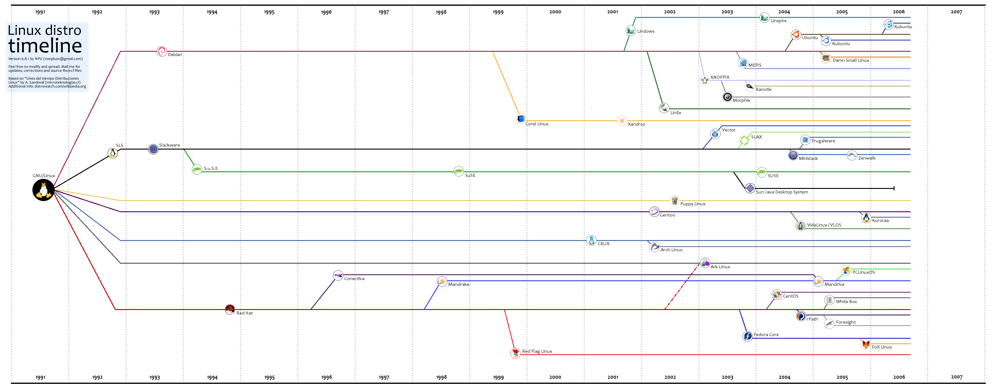

第 48 章 Linux
目录
Linux 诞生和发展
作者:不详
Linux 操作系统是UNIX 操作系统的一种克隆系统。它诞生于1991 年的10 月5 日（这是第一次正式向外公布的时间）。以后借助于Internet 网络，并经过全世界各地计算机爱好者的共同努力下，现已成为今天世界上使用最多的一种UNIX 类操作系统，并且使用人数还在迅猛增长。Linux 操作系统的诞生、发展和成长过程始终依赖着以下五个重要支柱：UNIX 操作系统、MINIX 操作系统、GNU 计划、POSIX 标准和Internet 网络。
下面主要根据这五个基本线索来追寻一下Linux 的开发历程，它的酝酿过程，最初的发展经历。首先分别介绍其中的四个基本要素(UNIX、MINIX、GNU 和POSIX，Internet 的重要性显而易见，所以不再赘述)，然后根据Linux 的创始人Linus Toravlds 从对计算机感兴趣而自学计算机知识，到心里开始酝酿编制一个自己的操作系统，到最初Linux 内核0.01 版公布，以及从此如何艰难地一步一个脚印地在全世界hacker 的帮助下最后推出比较完善的1.0 版本这段时间的发展经过，也即对Linux 的早期发展历史进行详细介绍。
UNIX 操作系统的诞生
Linux 操作系统是UNIX 操作系统的一个克隆版本。UNIX 操作系统是美国贝尔实验室的Ken.Thompson和Dennis Ritchie 于1969 年夏在DEC PDP-7 小型计算机上开发的一个分时操作系统。当时Ken Thompson 为了能在闲置不用的PDP-7 计算机上运行他非常喜欢的星际旅行（Space travel）游戏，在1969 年夏天乘他夫人回家乡加利福尼亚渡假期间，在一个月内开发出了unix 操作系统的原型。当时使用的是BCPL 语言（基本组合编程语言），后经Dennis Ritchie 于1972 年用移植性很强的C 语言进行了改写，使得UNIX 系统在大专院校得到了推广。
MINIX 操作系统
MINIX 系统是由Andrew S. Tanenbaum（AST）开发的。AST 是在荷兰Amsterdam 的Vrije 大学数学与计算机科学系统工作，是ACM 和IEEE 的资深会员(全世界也只有很少人是两会的资深会员)。共发表了100 多篇文章，5 本计算机书籍。AST 虽出生在美国纽约，但是是荷兰侨民(1914 年他的祖辈来到美国)。他在纽约上的中学、M.I.T上的大学、加洲大学Berkeley 分校念的博士学位。由于读博士后的缘故，他来到了家乡荷兰。从此就与家乡一直有来往。后来就在Vrije 大学开始教书、带研究生了。荷兰首都Amsterdam 是个常年阴雨绵绵的城市，而对于AST 来说，这最好不过了，因为这样他就可以待在家里摆弄他的计算机了。MINIX 是他1987年编制的，主要用于学生学习操作系统原理。到91年时版本是1.5。目前主要有两个版本在使用： 1.5 版和2.0 版，当时该操作系统在大学使用是免费的，但其它用途不是，当然目前都已经是免费的，可以从许多FTP上下载。
对于Linux 系统，他表示对其开发者Linus 的称赞。但他认为Linux 的发展有很大原因是因为他为了保持minix 的小型化，能让学生在一个学期内就能学完，而没有接纳全世界许多人对Minix 的扩展要求。因此这激发了Linus 编写Linux。Linus 正好抓住了这个好时机。
作为一个操作系统，MINIX 并不是优秀者，但它同时提供了用C 语言和汇编语言写的系统源代码。这是第一次使得有抱负的程序员或hacker 能够阅读操作系统的源代码，在当时这种源代码是软件商一直小心地守护着的。
GNU 计划
GNU 计划和自由软件基金会(the Free Software Foundation - FSF)是由Richard M. Stallman 于1984 年一手创办的。旨在开发一个类似 Unix、并且是自由软件的完整操作系统：GNU 系统。（GNU 是"GNU's Not Unix"的递归缩写，它的发音为"guh-NEW"。）各种使用linux 作为核心的GNU 操作系统正在被广泛的使用。虽然这些系统通常被称作"Linux"，但是严格地说，它们应该被称为GNU/Linux 系统。
到上世纪90 年代初，GNU 项目已经开发出许多高质量的免费软件，其中包括有名的emacs 编辑系统、bash shell 程序、gcc 系列编译程序、gdb 调试程序等等。这些软件为Linux 操作系统的开发创造了一个合适的环境，是Linux 能够诞生的基础之一。以至于目前许多人都将Linux 操作系统称为"GNU/Linux"操作系统。
POSIX 标准
POSIX(Portable Operating System Interface for Computing Systems)是由IEEE 和ISO/IEC 开发的一簇标准。该标准是基于现有的UNIX 实践和经验，描述了操作系统的调用服务接口，用于保证编制的应用程序可以在源代码一级上在多种操作系统上移植运行。它是在1980 年早期一个UNIX 用户组(usr/group)的早期工作的基础上取得的。该UNIX 用户组原来试图将AT&T 的系统V 和Berkeley CSRG的BSD 系统的调用接口之间的区别重新调和集成，从而于1984 年产生了/usr/group 标准。1985 年，IEEE操作系统技术委员会标准小组委员会（TCOS-SS）开始在ANSI 的支持下责成IEEE 标准委员会制定有关程序源代码可移植性操作系统服务接口正式标准。到了1986 年4 月，IEEE 就制定出了试用标准。第一个正式标准是在1988 年9 月份批准的（IEEE 1003.1-1988），也既以后经常提到的POSIX.1 标准。
1989 年POSIX 的工作被转移至ISO/IEC 社团，并由15 工作组继续将其制定成ISO 标准。到1990 年，POSIX.1 与已经通过的C 语言标准联合，正式批准为IEEE 1003.1-1990（也是ANSI 标准）和ISO/IEC 9945-1:1990 标准。
POSIX.1 仅规定了系统服务应用程序编程接口（API），仅概括了基本的系统服务标准，因此期望对系统的其它功能也制定出标准。这样IEEE POSIX 的工作就开始展开了。在1990 年，刚开始有十个批准的计划在进行，有近300 多人参加每季度为期一周的会议。着手的工作有命令与工具标准(POSIX.2)、测试方法标准（POSIX.3）、实时API（POSIX.4）等。到了 1990 年上半年已经有25 个计划在进行，并且有16 个工作组参与了进来。与此同时，还有一些组织也在制定类似的标准，如X/Open，AT&T，OSF 等。
在90 年代初，POSIX 标准的制定正处在最后投票敲定的时候，那是1991-1993 年间。此时正是Linux刚刚起步的时候，这个UNIX 标准为Linux 提供了极为重要的信息，使得Linux 的能够在标准的指导下进行开发，能够与绝大多数UNIX 系统兼容。在最初的Linux 内核代码中(0.01 版、0.11 版)就已经为Linux与POSIX 标准的兼容做好了准备工作。在0.01 版的内核/include/unistd.h 文件中就已经定义了几个有关POSXI 标准要求的常数符号，并且在注释中就写到"ok，这也许是个玩笑，但我正在着手研究它呢"。
1991 年7 月3 日在comp.os.minix 上发布的post 上就已经提到了正在搜集POSIX 的资料。(当然此时还不存在Linux 这个名称，当时Linus 的脑子里想的可能是FREAX ，FREAX 的英文含义是怪诞的、怪物、异想天开等)。其中透露了他正在进行Linux 系统的开发，并且在Linux 最初的时候已经想到要实现与POSIX（UNIX 的国际标准）的兼容问题了。
Linux 操作系统的诞生
1981 年IBM 公司推出享誉全球的微型计算机IBM PC。在1981-1991 年间，MS-DOS 操作系统一直是微型计算机上操作系统的主宰。此时计算机硬件价格虽然逐年下降，但软件价格仍然是居高不下。当时Apple 的MACs 操作系统可以说是性能最好的，但是其天价没人能够轻易靠近。
当时的另一个计算机技术阵营是Unix世界。但是Unix操作系统就不仅是价格贵的问题了。为了寻求高利率，Unix经销商将价格抬得极高，PC小用户就根本不能靠近它。曾经一度受到Bell Labs的许可而可以在大学中用于教学的UNIX源代码一直被小心地守卫着不需公开。对于广大的PC用户，软件行业的大型供应商始终没有给出有效的解决该问题的手段。正在此时，出现了MINIX操作系统，并有一本详细的书本描述它的设计实现原理。由于AST的书写的非常详细，并且叙述有条有理，几乎全世界的计算机爱好者都在看这本书以理解操作系统的工作原理。其中也包括Linux系统的创始者Linus Benedict Torvalds。当时(1991年)，Linus Benedict Torvalds 是赫尔辛基大学计算机科学系的二年级学生，也是一个自学hacker。这个21 岁的芬兰年轻人喜欢鼓捣计算机，测试计算机的能力和限制。但当时缺乏的是一个专业级的操作系统。MINIX 虽然很好，但只是一个用于教学目的简单操作系统，而不是一个强有力的实用操作系统。
到1991 年，GNU 计划已经开发出了许多工具软件。最受期盼的Gnu C 编译器已经出现，但还没有开发出免费的GNU 操作系统。即使是MINIX 也开始有了版权，需要购买才能得到源代码。而GNU 的操作系统HURD 一直在开发之中，但并不能在几年内完成。对于Linus 来说，已经不能等待了。从1991 年4 月份起，他开始酝酿并着手编制自己的操作系统。刚开始，他的目的很简单，只是为了学习Intel 386 体系结构保护模式运行方式下的编程技术。但后来Linux 的发展却完全改变了初衷。
1991 年初，Linux 开始在一台386sx 兼容微机上学习minix 操作系统。通过学习，他逐渐不能满足minix 系统的现有性能，并开始酝酿开发一个新的免费操作系统。根据Linus 在comp.os.minix 新闻组上发布的消息，我们可以知道他逐步从学习minix 系统到开发自己的Linux 的过程。
Linus 第1 次向comp.os.minix 投递消息是在1991 年3 月29 日。题目是"gcc on minix-386 doesn't optimize",是有关gcc 编译器在minix-386 上运行的优化问题，由此可知，Linus 在1991 年的初期已经开始深入研究了minix 系统，并在这段时间有了改进minix 操作系统的思想，而且在进一步学习minix系统中，逐步演变为想自己重新设计一个基于Intel 80386 体系结构的新操作系统。他在回答有人提出minix 上的一个问题时，所说的第一句话是"阅读源代码"（"RTFSC (Read the Fucking Source Code :-)"）。他认为答案就在源程序中。这也说明了对于学习系统软件来说，你不光需要懂得系统的工作基本原理，还需要结合实际系统，学习实际系统的实现方法。因为理论毕竟是理论，其中省略了许多枝节，而这些枝节问题虽然没有太多的理论含量，但却是一个系统必要的组成部分，就像麻雀身上的一根羽毛。
从1991 年的4 月份开始，Linus 几乎花了全部时间研究386-minix 系统(hack the kernel)，并且尝试着移植GNU 的软件到该系统上(GNU gcc、bash、gdb 等)。并于4 月13 日在comp.os.minix 上发布说自己已经成功地将bash 移植到了minix 上，而且已经爱不释手、不能离开这个shell 软件了。
第一个与Linux 有关的消息是在1991 年7 月3 日在comp.os.minix 上发布的(当然此时还不存在Linux 这个名称，当时Linus 的脑子里想的可能是FREAX ，FREAX 的英文含义是怪诞的、怪物、异想天开等)。其中透露了他正在进行Linux 系统的开发，并且在Linux 最初的时候已经想到要实现与POSIX（UNIX 的国际标准）的兼容问题了。
在Linus 的下一发布的消息中(1991 年8 月25 日 comp.os.minix)，他向所有minix 用户询问"What would you like to see in minix?"("你最想在minix 中见到什么？")，在该消息中他首次透露出正在开发一个(免费的)386(486)操作系统，并且说只是兴趣而已，代码不会很大，也不会象GNU 的那样专业。开发免费操作系统这个想法从4 月份就开始酝酿了，希望大家反馈一些对于minix 系统中喜欢那些特色不喜欢什么等信息，由于实际的和其它一些原因，新开发的系统刚开始与minix 很象（并且使用了minix 的文件系统）。并且已经成功地将bash(1.08 版)和gcc(1.40 版)移植到了新系统上，而且在过几个月就可以实用了。
最后，Linus 申明他开发的操作系统没有使用一行minix 的源代码；而且由于使用了386 的任务切换特性，所以该操作系统不好移植（没有可移植性），并且只能使用AT 硬盘。对于Linux 的移植性问题，Linus 当时并没有考虑。但是目前Linux 几乎可以运行在任何一种硬件体系结构上。
到了1991 年的10 月5 日，Linus 在comp.os.minix 新闻组上发布消息，正式向外宣布Linux 内核系统的诞生（Free minix-like kernel sources for 386-AT）。这段消息可以称为Linux 的诞生宣言，并且一直广为流传。因此10 月5 日对Linux 社区来说是一个特殊的日子，许多后来Linux 的新版本发布时都选择了这个日子。所以RedHat 公司选择这个日子发布它的新系统也不是偶然的。
Linux 操作系统版本的变迁
- 0.00 (1991.2-4?) 两个进程分别显示AAA BBB
- 0.01 (1991.9?)第一个正式向外公布的Linux 内核版本。
- 0.02 (1991.10.5)该版本以及0.03 版是内部版本，目前已经无法找到。
- 0.03 (1991.10.5)
- 0.10 (1991.10)由Ted Ts'o 发布的Linux 内核版本。
- 0.11 (1991.12.8)基本可以正常运行的内核版本。
- 0.12 (1992.1.15)主要加入对数学协处理器的软件模拟程序。
- 0.95 (0.13) (1992.3.8) 开始加入虚拟文件系统思想的内核版本。
- 0.96 (1992.5.12)开始加入网络支持和虚拟文件系统VFS。
- 0.97 (1992.8.1)
- 0.98 (1992.9.29)
- 0.99 (1992.12.13)
- 1.0 (1994.3.14)
- 1.20 (1995.3.7)
- 2.0 (1996.2.9)
- 2.20 (1999.1.26)
- 2.40 (2001.1.4)
- 2.60 (2003.12.17)
将Linux 系统0.13 版内核直接改称0.95 版，Linus 的意思是让大家不要觉得离1.0 版还很遥远。同时，从0.95 版开始，对内核的许多改进之处(补丁程序的提供)均以其他人为主了，而Linus 的主要任务开始变成对内核的维护和决定是否采用某个补丁程序。
Linux 名称的来由
Linux 操作系统刚开始时并没有被称作Linux，Linus 给他的操作系统取名为FREAX，其英文含义是怪诞的、怪物、异想天开等意思。在他将新的操作系统上载到ftp.funet.fi 服务器上时，管理员Ari Lemke很不喜欢这个名称。他认为既然是Linus 的操作系统就取其谐音Linux 作为该操作系统的目录吧，于是Linux 这个名称就开始流传下来。
在Linus 的自传《Just for Fun》一书中，Linus 解释说："坦白地说，我从来没有想到过要用Linux 这个名称发布这个操作系统，因为这个名字有些太自负了。而我为最终发布版准备的是什么名字呢？Freax。实际上，内核代码中某些早期的Makefile - 用于描述如何编译源代码的文件 - 文件中就已经包含有"Freax"这个名字了，大约存在了半年左右。但其实这也没什么关系，在当时还不需要一个名字，因为我还没有向任何人发布过内核代码。而Ari Lemke，他坚持要用自己的方式将内核代码放到ftp 站点上，并且非常不喜欢Freax 这个名字。他坚持要用现在这个名字(Linux)，我承认当时我并没有跟他多争论。但这都是他取的名字。所以我可以光明正大地说我并不自负，或者部分坦白地说我并没有本位主义思想。但我想好吧，这也是个好名字，而且以后为这事我总能说服别人，就象我现在做的这样。"-- Linus Torvalds《Just for fun》第84-88 页。
通过上述说明，我们可以对上述Linux 的五大支柱归纳如下：
- UNIX 操作系统 -- UNIX 于1969 年诞生在Bell 实验室。Linux 就是UNIX 的一种克隆系统。UNIX的重要性就不用多说了。
- MINIX 操作系统 -- Minix 操作系统也是UNIX 的一种克隆系统，它于1987 年由著名计算机教授Andrew S. Tanenbaum 开发完成。由于MINIX 系统的出现并且提供源代码(只能免费用于大学内)在全世界的大学中刮起了学习UNIX 系统旋风。Linux 刚开始就是参照Minix 系统于1991 年才开始开发。
- GNU 计划-- 开发Linux 操作系统，以及Linux 上所用大多数软件基本上都出自GNU 计划。Linux只是操作系统的一个内核，没有GNU 软件环境(比如说bash shell)，则Linux 将寸步难行。
- POSIX 标准 -- 该标准在推动Linux 操作系统以后朝着正规路上发展起着重要的作用。是Linux前进的灯塔。
- INTERNET -- 如果没有Intenet 网，没有遍布全世界的无数计算机骇客的无私奉献，那么Linux最多只能发展到0.13(0.95)版的水平。
附录：Linux 发行版分支图
